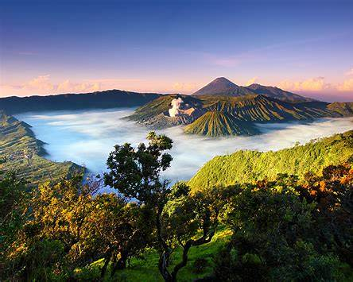
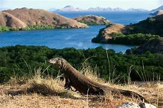

⬅ Kembali
Warisan Budaya Alam (Natural Heritage)
Berikut adalah beberapa contoh situs alam Indonesia yang diakui secara global:
DANAU TOBA
Pelajari lebih lanjut
RAJA AMPAT
Pelajari lebih lanjut

BROMO TENGGER SEMERU
Pelajari lebih lanjut

TAMAN NASIONAL KOMODO
Pelajari lebih lanjut